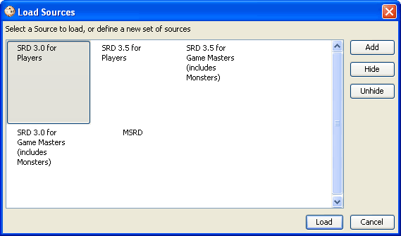

Load Sources
The
Load Source
option calls up the
Load Sources
dialog and allows the user to select
what gamemode/sources to load.

The current default set of
Load Sets
are as
follows:
-
MSRD
- Selects the MSRD gameMode and data set
for loading.
-
SRD 3.0 for Game Masters (includes Monsters)
-
Selects the 3.0 SRD gameMode and data set, including monsters, for
loading.
-
SRD 3.0 for Players
- Selects the 3.0 SRD
gameMode and data set, excluding monsters, for loading.
-
SRD 3.5 for Game Masters )includes Monsters)
-
Selects the 3.5 SRD gameMode and data set, including monsters, for
loading.
-
SRD 3.5 for Players
- Selects the 3.5 gameMode
and data set, excluding monsters, for loading.
The command function on this dialog box include
the following:
-
Add
- Allows the addition of a customized Load
Set.
-
Hide
- Will remove the selectedLoad Set from
view.
-
Unhide
- Will allow the selection of a hidden
Lod Set and will make it visible.
-
Load
- Will load the selected Load Set.
-
Cancel
- Will close the Load Sources
window.
Adding a Customized Load Set